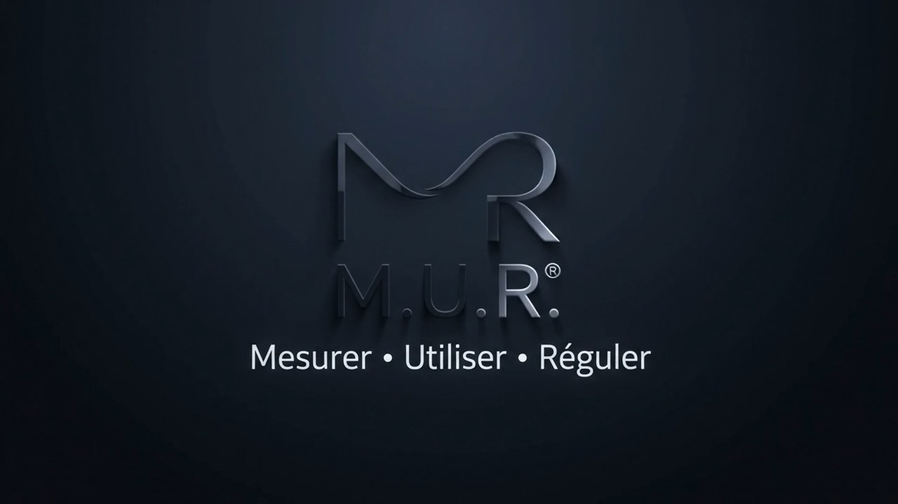

Mesurer
Créer un point de départ avec un questionnaire structuré.

Mesurer, utiliser et réguler son système neurovégétatif.
Une approche claire pour comprendre son fonctionnement, observer ses repères et agir au quotidien.
Créer un point de départ avec un questionnaire structuré.
Mobiliser les bonnes resources at the right time.
Installer un équilibre durable dans la vie réelle.
Faites défiler pour explorer les quatre repères.
Trois branches coopèrent en permanence pour adapter le corps à l’action, au repos et à la digestion.
Met le corps en action : vigilance, énergie et adaptation à l’effort.
Favorise le repos, la récupération et le retour à l’équilibre.
Participe à la digestion et au dialogue permanent entre le ventre et le cerveau.
Un espace personnel pour mesurer, retrouver ses exercices et suivre son cheminement.
Explorer sa flexibilité neurovégétative.
Des pratiques guidées, adaptées au quotidien.
Garder des repères dans la durée.
Des rendez-vous pour découvrir la méthode, pratiquer et progresser avec un cadre clair.
Une première entrée dans l’univers M.U.R.
Expérimenter concrètement les outils.
Inscrire ses repères dans le temps.